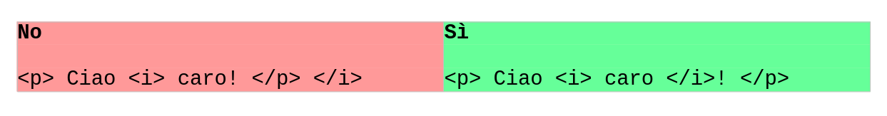

HTML
HTML Sta per Hyper Textual Markup Language.
Siamo alla versione 5.x
Utilizza documenti di testo semplice, con estensione .html
Si basa sui TAG, che funzionano come le parentesi (apri tag, scrivi, chiudi tag).
Tutta la pagina è racchiusa all'interno del tag HTML, che a sua volta si suddivide in
- HEAD, il tag contenente le (meta) informazioni sulla pagina
- BODY, il tag contenente la pagina che sarà visualizzata nel browser
La struttura di base di una pagina web (HTML 5.x) è la seguente:
<!doctype html>
<html lang="it">
<head>
<!-- questo è un commento HTML -->
<title>Il titolo della pagina</title>
</head>
<body>
<!-- qui il codice della pagina che sarà visualizzato nel browser -->
<h1>Ciao, questo è un titolo di capitolo</h1>
<p>Questo è un paragrafo e io sono la tua prima pagina web :)</p>
</body>
</html>
Per provare, copiate l'esempio sopra su un editor di testo (ad esempio, il Blocco Note di Windows) e salvate il file con estensione .html (ad esempio, con il nome prova.html).
Poi, fate doppio click sopra il file...
Tag HTML: elementi e attributi
Il body rappresenta come uno sfondo bianco sopra il quale galleggiano una serie di rettangoli, che rappresentano tutti gli elementi della pagina.
Ogni elemento viene definito tramite un tag, ovvero un "comando" HTML che specifica un tipo di informazione contenuta nella pagina. Ad esempio con un tag possiamo indicare un titolo, un testo, un immagine, un video, etc...
I tag si scrivono nella forma
oppure semplicemente
Nonostante l'HTML sia un linguaggio fortemente tollerante con errori sintattici di ogni genere, elenchiamo subito le regole auree da ricordare per il buon funzionamento delle pagine che si scrivono (soprattutto, perché venga visualizzato esattamente ciò che pensiamo di avere scritto...):
- i tag che contengono testo hanno il tag di apertura e il tag di chiusura (es:
testo ) - ripeto: non vi scordate il tag di chiusura!
- I tag si scrivono SEMPRE e SOLO con lettere MINUSCOLE!!!
- I tag si possono "nidificare" con la logica delle parentesi, ovvero l'ordine di chiusura dei tag deve essere rovesciato rispetto all'ordine di apertura (un esempio è meglio di 1000 parole!)

Inoltre i tag possono contenere delle informazioni opzionali, chiamate attributi, che specificano il senso del tag (ad esempio, il tag che identifica un area cliccabile... dove ti porta quando ci clicchi? Data una immagine, possiamo definire la sua larghezza? Etc...). Gli attributi sono sempre inseriti nel tag di apertura e sono sempre specificati con la sintassi nome="valore".
Ad esempio:
Vediamo i tag più importanti, aggiungendo per ognuno uno o più esempi da testare nei propri files (fatelo! O non capirete nulla di quello che leggete! Invece con 2 minuti di prova per ogni gruppo le cose si chiariranno in un secondo!).
Titoli (Headings)
I titoli sono definiti dai tag H1, H2, H3, H4, H5, H6. Il titolo più importante è il titolo H1, poiché a decrescere in ordine gerarchico.
<h1> Titolo 1 </h1>
<h2> Titolo 2 </h2>
<h3> Titolo 3 </h3>
<h4> Titolo 4 </h4>
<h5> Titolo 5 </h5>
<h6> Titolo 6 </h6>
Paragrafi
I paragrafi di testo sono contenuti all'interno di un tag P. Prova a scrivere l'esempio qui sotto e a vedere su una pagina web cosa succede.
<p>Questo è un paragrafo.</p>
<p>Questo è un altro paragrafo.</p>
<p>Qui scrivi un altro paragrafo con abbastanza testo per riempire la
riga ed andare a capo.</p>
Immagini
Le immagini si inseriscono in una pagina HTML con il tag IMG. Ovviamente in questo tag esiste un attributo, l'attributo SRC, che permette di specificare il percorso dell'immagine da visualizzare. Altro attributo obbligatorio per le immagini è l'attributo ALT, che permette di specificare un testo alternativo nel caso ad esempio di problemi nella visualizzazione dell'immagine.
Nell'esempio sotto il file "prova.jpg" si deve trovare nella stessa cartella del file contenente quel codice.
Link
I link sono le aree cliccabili delle pagine web. Contengono (ovviamente) un attributo (href) che permette di specificare la pagina che si vuole raggiungere quando si seleziona il link.
I link hanno inoltre un attributo chiamato TARGET che specifica dove aprire la pagina indicata nel link.
I possibili valori per esso sono:
_self(default): apre il link nella stessa finestra (o scheda)_blank: apre il link in una nuova finestra (o scheda)
Esistono anche altri valori per l'attributo, ma si riferiscono ai frame, che sono una cosa che non voglio impariate :)
Con i link è possibile inoltre creare dei bookmark all'interno della pagina stessa per portare l'utente in navigazione non solo su una pagina, ma su un punto esatto di essa. Il riferimento si può creare in qualsiasi tag con l'attributo ID, il link viene creato dal link alla pagina più il nome del bookmark.
Interruzioni di linea
Come andare a capo quando vogliamo noi invece che a seconda di come viene visualizzata la pagina HTML? Con il tag BR
Linee di interruzione
E se volessimo addirittura interrompere o separare due paragrafi con una bella linea orizzontale? Basta aggiungere un tag HR!
Il problema delle poesie in HTML
E se uno dovesse ricopiare una poesia o un testo e mantenere inalterati spazi e capoversi? Per testo preformattato si usa il tag PRE. Tutto (e solo) il testo dentro questo tag sarà formattato esattamente come trascritto. Provare per credere!
Formattazione del testo
Esistono tag che servono per la formattazione del testo: grassetto, corsivo, barrato, apice, pedice sono formattazioni particolari ottenibili coi seguenti tag:
| TAG | Descrizione |
|---|---|
| B | (bold) testo in grassetto |
| STRONG | Testo semanticamente Importante (la resa è uguale al grassetto) |
| I | (italic) testo in corsivo |
| EM | (emphasized) testo enfatizzato (la resa è uguale al corsivo) |
| MARK | (marked) testo evidenziato |
| SMALL | Testo rimpicciolito |
| DEL | (deleted) testo cancellato |
| INS | (inserted) testo inserito |
| SUB | (subscripted) testo a pedice |
| SUP | (superscripted) testo ad apice |
Anche qui, provare per capire e verificare
<b>Testo in grassetto</b> <br>
<strong>Fate i compiti!</strong> <br>
La parola <i>ciao</i> è in corsivo <br>
<em>Sveglia!</em> Disse il docente arrabbiato... <br>
<mark>Testo evidenziato </mark> <br>
Testo <small>piccolo</small> <br>
oops... <del>sbagliato!</del> <br>
Aggiungi <ins>questo</ins>! <br>
Elenco con pedici: a<sub>1</sub>, a<sub>2</sub>,
a<sub>3</sub>... <br>
Potenze (apici): a<sup>2</sup> + b<sup>3</sup> ... <br>
che diventa:
Fate i compiti!
La parola ciao è in corsivo
Sveglia! Disse il docente arrabbiato...
Testo evidenziato
Testo piccolo
oops...
Aggiungi questo!
Elenco con pedici: a1, a2, a3...
Potenze (apici): a2 + b3 ...
Esercizi
In questa sessione di esercizi troveremo pagine da realizzare contenenti:
- titoli
- paragrafi
- link
- immagini
- formattazioni delle linee (break) e del testo
Crea una directory sul Desktop del tuo PC chiamata "EserciziHTML". Al suo interno crea un file HTML contenente una pagina HTML vuota e rinominalo "skeleton.html". Infine crea una cartella denominata "immagini".
Contenuto del file skeleton.html
<!doctype html>
<html lang="it">
<head>
<title>Titolo</title>
</head>
<body>
...
</body>
</html>
Quando hai finito gli esercizi potrai esportare la cartella "EserciziHTML" essendo sicuro di portare via tutto il necessario :)
La cosa più "furba" da fare da qui in poi secondo me è fare copia e incolla del file "skeleton.html" nel file "EsercizioX.html" e poi modificare quest'ultimo avente già la struttura di base pronta.
Proviamo!
Per svolgere ognuno dei seguenti esercizi va creato un file (a partire dal file skeleton.html) che si chiama come l'esercizio stesso.
Ad esempio, il primo esercizio sarà da svolgere nel file "esercizioA01.html".
Esercizio A01
Inserire nel body un titolo H1, un paragrafo con testo a piacere e una immagine dopo il paragrafo. Ridimensionare l'immagine a grandezza fissa. (width e height). Decidete voi quale in base all'immagine scelta, ma fate in modo che sia più piccola dell'originale. Il file dell'immagine va ovviamente salvato nell'apposita cartella delle immagini. Ricordatevi il testo alternativo!!!
Esercizio A02
Aggiungere, dopo l'immagine, un titolo H2 chiamato "Link" e sotto un link al sito del corso dvjlabs.org. State attenti ad aggiungere, nell'attributo HREF, tutto il link assoluto "https://www.dvjlabs.org".
Esercizio A03
Aggiungere all'immagine un link in modo tale che, al click sull'immagine, essa venga aperta, in una nuova scheda, alla dimensione originale.
Esercizio A04
Aggiungere sotto al titolo dei link alcuni esempi di link a piacere, separati ognuno da una linea orizzontale
Esercizio A05
Aggiungere un titolo H2 chiamato HTML. Copiare in un paragrafo P le prime righe di Wikipedia che parlano di HTML. Fate in modo che occupino oltre 10 righe.
Aggiungere un titolo H2 chiamato URL. Copiare in un paragrafo P le prime righe di Wikipedia che parlano di un URL. Come sopra.
Esercizio A06
Titolo H2 chiamato "La poesia dell'informatico". Comporre una poesia di 4 righe in rima baciata e inserirla sotto il titolo.
Esercizio A07
Aggiungere i bookmarks (con il tag ID) a tutti i titoli della pagina. In fondo, aggiungere un nuovo titolo H1 chiamato MAPPA e mettere i link per andare velocemente a tutte le parti della pagina.
Esercizio A08
Rileggere tutto il testo scritto e aggiungere l'opportuna formattazione del testo evidenziando con i tag opportuni i passaggi più importanti.
Aggiungere i commenti HTML opportuni ove necessario per la comprensione.